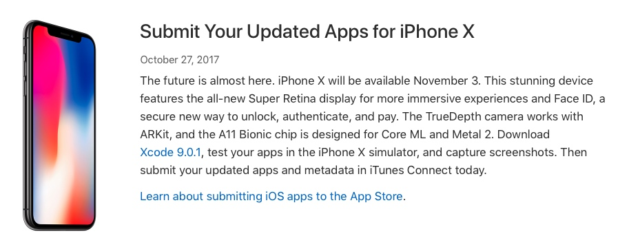

iPhone X 与之前的 iPhone 不同，为了达到全面屏的效果，实体 Home 键被屏幕底部的 Home Indicator 取代，屏幕的四个角由直角变为了圆角，屏幕比例也不再是常见的 16:9，更引人注意的是屏幕顶部还有一个特殊的 Sensor Housing，也即人们俗称的刘海。之前的文章详细阐述了这些变化给 iPhone X 上的 app 适配带去的挑战。
10 月 27 日 iPhone X 开启预订，11 月 3 日第一批大众用户就将要拿到崭新的 iPhone X。同在 10 月 27 日，Apple 发布公告提醒开发者现在可以开始在 iTunes Connect 中提交适配了 iPhone X 的 app、更新 app 的元数据信息了。iTunes Connect 也开始支持为 app 添加 5.8 寸屏幕预览图片。

没有适配 iPhone X 的 app 在 iPhone X 上打开时，很有可能就是以 iPhone 8 的屏幕大小、上下有黑边的形式（竖屏条件下）呈现（具体可以看这篇文章的「App 的适配」部分），这将十分影响用户体验。以下按照不同的使用频率，列出了我个人使用的一些 app，以记录这些 app 适配 iPhone X 的时间线。一方面可以观察什么时间 iPhone X 可以度过这个 app 适配的尴尬期，有助于购机决策；另一方面也把这些信息记录下来，以供以后 Apple 再次推出这种改变已有屏幕比例、增加新的特性以致需要耗费较多工作适配的机型时的参考。
一个 app 对新机型的适配速度和适配质量能够很大程度上反映出开发者对这个 app 上不上心。
Note：
- 本文章会根据 app 适配 iPhone X 的进度不定期更新；
- 部分 app 如果没有在更新日志中提到适配了 iPhone X，该 app 也会被标记为未适配；
10 月 27 日前 Apple 不允许在更新日志中提及 iPhone X 及其相关截图、视频等资源，在这之前也有一些成功提交了更新信息的「漏网之鱼」。
11 月 1 日更新：
- 从 10 月 31 日各家媒体发出的 iPhone X 评测来看，国内的这些应用适配的速度比想象的快一些，像手机淘宝、大众点评、什么值得买等 app 都进行了 iPhone X 的适配，但并没有在更新说明中提到此事。不过常用的微博没有适配，微信适配了一部分，仍有一些问题。
下表中的适配选项暂时仍按照 app 的更新说明来确定。
11 月 3 日更新：
- 今日 iPhone X 正式开卖，App Store app 更新密度变高，适配 iPhone X 的 app 开始多了起来；
- 微信算是在发售前赶上了末班车，完成适配；微博不出所料依旧没有适配，点名批评；支付宝看似适配了，实际上 Face ID 没有适配，iPhone X 上只能用手势和密码了；
- 银行界的希望「招商银行」果然完成了适配，表扬；
后续只更新个人认为比较重要 app 的更新状态。
11 月 5 日更新：
- 根据 app 在真机上的实际情况来更新适配情况，不再根据 app 更新日志来确定 app 适配情况；
- 还是有挺多 app 已经完成了适配，但是并没有在 app 更新日志里提及；
适配 iPhone X 的状态改为三种：Yes-完全适配，No-完全没适配，Icp（incomplete）-不完全适配，在备注中会写明适配细节，☹️ 表明对这个 app 本来很看好，但实际的适配情况略有失望。
11 月 8 日更新：
- 越来越多的 app 更新适配了 iPhone X，但发现绝大多数的 app 的适配更新都有赶工痕迹，主要路径、整体 UI 没有特别大的问题，但仔细观察一些细节就会发现问题。要想把 iPhone X 适配好，得仔细多花些心思。
- 视频播放这块，由于各家视频应用的播放器都有一些花里胡哨的功能，所以在横屏播放上大多数的适配都有问题或者说交互不够友好、容易误触等。
- 国内的这些应用喜欢在开屏时设置全屏的开屏广告，应用内又喜欢设置令人眼花缭乱的推荐位广告。非常明显，这些广告的图片没有针对 iPhone X 进行特殊优化，切字、盖字现象普遍存在。
- 笼统比较一下国内主要 app 适配的速度，豆瓣、饿了么、美团、大众点评、携程、网易、京东、滴滴这几家都比较迅速，腾讯紧随其后，再就是阿里系，百度直接垫底。
第一梯队
| App | 适配 iPhone X | 版本号 | 日期 | 备注 |
|---|---|---|---|---|
| Yes | 6.5.21 | 2017-11-03 | ||
| Icp | 7.10.3 | 2017-11-04 | 赶工痕迹明显，图片拉伸、UI 错位 | |
| Alipay | Icp | 不能用 Face ID | ||
| Youtube | Yes | 2017-11-04 前 | ||
| Spotify | Yes | 8.4.28 | 2017-11-17 | |
| Pocket Casts | Yes | 2017-11-04 前 | ||
| Surge | Yes | 2.7.0 | 2017-11-04 前 | 在此指 TestFlight 版本 |
| Documents | Yes | 6.2.1 | 2017-11-03 | |
| 端 | No | |||
| Airmail | Yes | 2017-11-04 前 | ||
| Things 3 | Yes | 3.2.4 | 2017-11-04 | |
| Tweetbot 4 | Yes | 4.7.6 | 2017-10-22 | |
| Due | Yes | 2.6 | 2017-11-05 | |
| My Weather | Yes | 1.5.5 | 2017-10-27 | |
| Medium | Yes | 3.11 | 2017-11-04 | |
| Moke | Yes | 2.23 | 2017-11-03 | |
| Fantastical | Yes | 2.9.2 | 2017-11-02 | |
| Bear | Yes | 1.3.2 | 2017-11-04 | |
| Dictionary | Yes | 2017-11-04 前 | ||
| Today | Yes | 2017-11-04 前 | ||
| Tydlig | No | |||
| 高德地图 | Yes | 8.2.0 | 2017-11-07 | |
| 豆瓣 | Yes | 5.10.0 | 2017-10-25 | |
| 即刻 | Yes | 3.6.0 | 2017-11-03 | |
| Instapaper | Yes | 7.5 | 2017-11-04 | |
| VSCO | Icp | 2017-11-04 前 | 部分 UI 切字，功能 bug，个人认为某些按钮的位置适配的不好 | |
| Ai Search | No | 据作者说，这个版本应该不会对 iPhone X 适配了，只能等待新的大版本（3.0）了 | ||
| 挖财记账理财 | No |
第二梯队
| App | 适配 iPhone X | 版本号 | 日期 | 备注 |
|---|---|---|---|---|
| LightScreen | Yes | 2.14 | 2017-10-20 | |
| Starbucks China | Yes | 5.0 | 2017-10-25 | |
| 淘宝 | Icp | 还是很多页面适配存在问题，顶部导航栏直接被刘海遮住，另外商品详情页上的 tool bar 适配的与京东一样，不够完美 | ||
| 京东 | Yes | 2017-11-04 前 | 个人感觉在商品详情页上的 tool bar 适配的不够好 | |
| Yes | 2017-11-04 前 | |||
| Dropbox | Yes | 2017-11-04 前 | ||
| Swarm | Yes | 2017-11-04 前 | ||
| Reeder | Yes | 3.1 | 2017-11-10 | |
| Infuse | Yes | 5.6 | 2017-11-10 | |
| Workflow | Yes | 1.7.7 | 2017-11-10 | |
| Authy | No | |||
| Telegram | Yes | 4.5 | 2017-11-15 | |
| 1Password | Yes | 7.0 | 2017-11-02 | |
| ofo | Yes | 2017-11-04 前 | ||
| Mobike | No | |||
| 大众点评 | Yes | 2017-11-04 前 | ||
| 饿了么 | Yes | 7.21 | 2017-11-04 前 | |
| Yes | 7.10 | 2017-11-04 前 | ||
| 淘票票 | Yes | 7.3.5 | 2017-10-31 | |
| WaterMinder | Yes | 3.4 | 2017-10-31 | |
| 网易云音乐 | Yes | 4.2.2 | 2017-10-31 | |
| 滴滴出行 | Yes | 5.1.18 | 2017-11-02 | |
| Google Photos | Yes | 3.8.0 | 2017-11-02 | |
| Instapaper | Yes | 2017-11-06 | ||
| 猫眼电影 | Yes | 8.1.4 | 2017-11-06 | |
| 知乎 | Yes | 4.4.2 | 2017-11-08 | |
| Yes | 7.2.8 | 2017-11-08 |
第三梯队
| App | 适配 iPhone X | 版本号 | 日期 | 备注 |
|---|---|---|---|---|
| Castro 2 | Yes | 2.5.1 | 2017-10-27 | |
| 好奇心日报 | Yes | 3.4.5 | 2017-10-29 | |
| 菜鸟裹裹 | Yes | 4.4.1 | 2017-10-31 | |
| PCalc | Yes | 3.7.2 | 2017-11-01 | |
| Enlight | Yes | 1.4 | 2017-11-02 | |
| 招商银行 | Yes | 6.0.0 | 2017-11-02 | |
| Spark | Yes | 1.12 | 2017-11-04 | |
| Launcher Center Pro | Yes | 2.8.2 | 2017-11-04 | |
| QQ音乐 | Yes | 7.9.2 | 2017-11-14 |